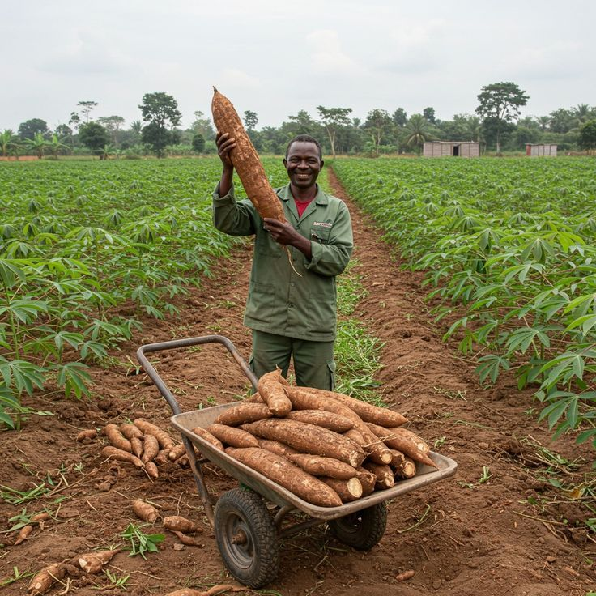
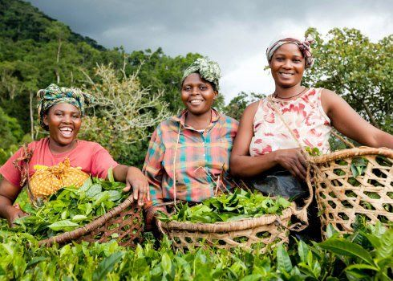

À propos de nous

Notre histoire
AGRI-TOGO est une coopérative agricole regroupant des producteurs de la région Maritime et des Plateaux. Depuis notre création, nous travaillons ensemble pour valoriser nos productions locales et améliorer les conditions de vie de nos membres.
Notre mission
Accompagner nos membres, promouvoir les bonnes pratiques agricoles et offrir des produits locaux de qualité afin de contribuer à la sécurité alimentaire et au développement durable du Togo.
Nos valeurs
🤝 Solidarité
Solidarité et entraide entre producteurs.
🌱 Environnement
Respect de l'environnement.
⚖️ Transparence
Transparence et équité.
⭐ Qualité
Qualité et engagement.
Nos membres / Producteurs
Akossi Adjoavi
Afiwa Tognon